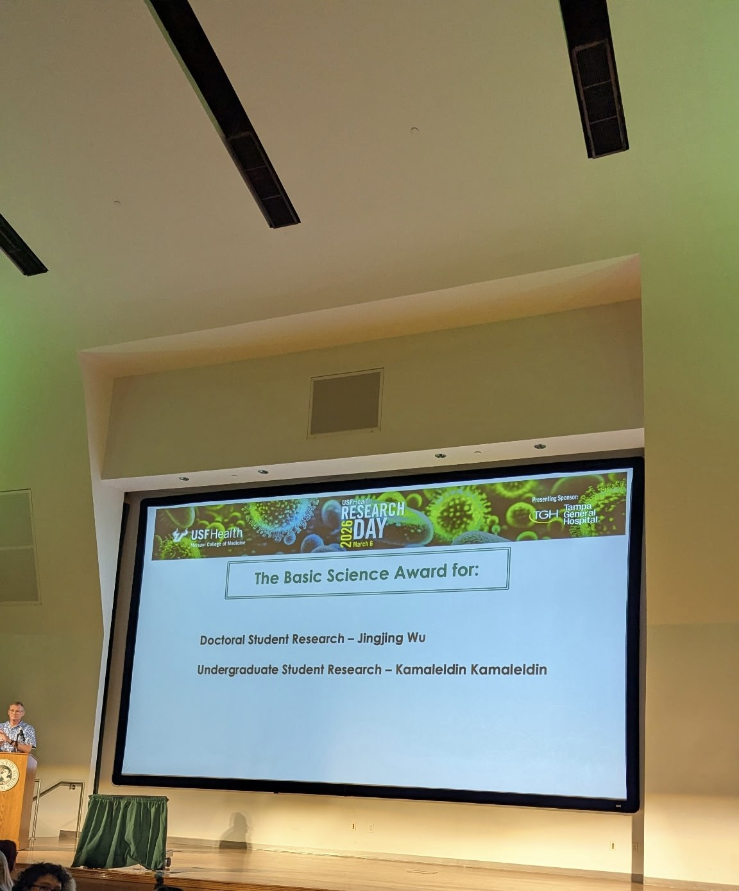
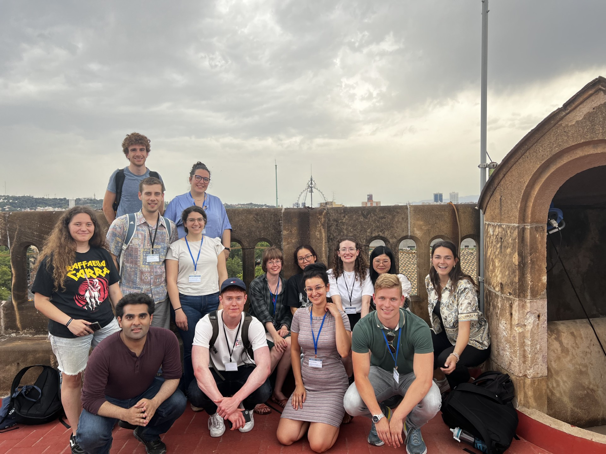

Basic Science Award: Doctoral Student Research
March 6, 2026
USF Health Research Day · University of South Florida
Tampa, Florida

March 6, 2026
USF Health Research Day · University of South Florida
Tampa, Florida

July 4, 2022
DATAETHICS Summer School · University of Barcelona
Barcelona, Spain
One-week summer school beginning July 4, 2022.

Visits and approximate visitor countries are shown below. Click the map for country counts and visit history.
Public statistics provided by Flag Counter. Counts begin when this counter is added; earlier visits are not included.